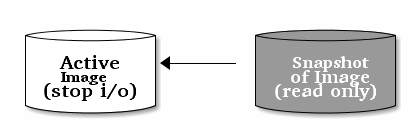

Snapshots¶
A snapshot is a read-only copy of the state of an image at a particular point in time. One of the advanced features of Ceph block devices is that you can create snapshots of the images to retain a history of an image’s state. Ceph also supports snapshot layering, which allows you to clone images (e.g., a VM image) quickly and easily. Ceph supports block device snapshots using the rbd command and many higher level interfaces, including QEMU, libvirt, OpenStack and CloudStack.
Important
To use use RBD snapshots, you must have a running Ceph cluster.
Note
If a snapshot is taken while I/O is still in progress in a image, the snapshot might not get the exact or latest data of the image and the snapshot may have to be cloned to a new image to be mountable. So, we recommend to stop I/O before taking a snapshot of an image. If the image contains a filesystem, the filesystem must be in a consistent state before taking a snapshot. To stop I/O you can use fsfreeze command. See fsfreeze(8) man page for more details. For virtual machines, qemu-guest-agent can be used to automatically freeze filesystems when creating a snapshot.

Cephx Notes¶
When cephx is enabled (it is by default), you must specify a user name or ID and a path to the keyring containing the corresponding key for the user. See User Management for details. You may also add the CEPH_ARGS environment variable to avoid re-entry of the following parameters.
rbd --id {user-ID} --keyring=/path/to/secret [commands]
rbd --name {username} --keyring=/path/to/secret [commands]
For example:
rbd --id admin --keyring=/etc/ceph/ceph.keyring [commands]
rbd --name client.admin --keyring=/etc/ceph/ceph.keyring [commands]
Tip
Add the user and secret to the CEPH_ARGS environment variable so that you don’t need to enter them each time.
Snapshot Basics¶
The following procedures demonstrate how to create, list, and remove snapshots using the rbd command on the command line.
Create Snapshot¶
To create a snapshot with rbd, specify the snap create option, the pool name and the image name.
rbd snap create {pool-name}/{image-name}@{snap-name}
For example:
rbd snap create rbd/foo@snapname
List Snapshots¶
To list snapshots of an image, specify the pool name and the image name.
rbd snap ls {pool-name}/{image-name}
For example:
rbd snap ls rbd/foo
Rollback Snapshot¶
To rollback to a snapshot with rbd, specify the snap rollback option, the pool name, the image name and the snap name.
rbd snap rollback {pool-name}/{image-name}@{snap-name}
For example:
rbd snap rollback rbd/foo@snapname
Note
Rolling back an image to a snapshot means overwriting the current version of the image with data from a snapshot. The time it takes to execute a rollback increases with the size of the image. It is faster to clone from a snapshot than to rollback an image to a snapshot, and it is the preferred method of returning to a pre-existing state.
Delete a Snapshot¶
To delete a snapshot with rbd, specify the snap rm option, the pool name, the image name and the snap name.
rbd snap rm {pool-name}/{image-name}@{snap-name}
For example:
rbd snap rm rbd/foo@snapname
Note
Ceph OSDs delete data asynchronously, so deleting a snapshot doesn’t free up the disk space immediately.
Purge Snapshots¶
To delete all snapshots for an image with rbd, specify the snap purge option and the image name.
rbd snap purge {pool-name}/{image-name}
For example:
rbd snap purge rbd/foo
Layering¶
Ceph supports the ability to create many copy-on-write (COW) clones of a block device shapshot. Snapshot layering enables Ceph block device clients to create images very quickly. For example, you might create a block device image with a Linux VM written to it; then, snapshot the image, protect the snapshot, and create as many copy-on-write clones as you like. A snapshot is read-only, so cloning a snapshot simplifies semantics–making it possible to create clones rapidly.

Note
The terms “parent” and “child” mean a Ceph block device snapshot (parent), and the corresponding image cloned from the snapshot (child). These terms are important for the command line usage below.
Each cloned image (child) stores a reference to its parent image, which enables the cloned image to open the parent snapshot and read it.
A COW clone of a snapshot behaves exactly like any other Ceph block device image. You can read to, write from, clone, and resize cloned images. There are no special restrictions with cloned images. However, the copy-on-write clone of a snapshot refers to the snapshot, so you MUST protect the snapshot before you clone it. The following diagram depicts the process.
Note
Ceph only supports cloning for format 2 images (i.e., created with rbd create --image-format 2). The kernel client supports cloned images since kernel 3.10.
Getting Started with Layering¶
Ceph block device layering is a simple process. You must have an image. You must create a snapshot of the image. You must protect the snapshot. Once you have performed these steps, you can begin cloning the snapshot.

The cloned image has a reference to the parent snapshot, and includes the pool ID, image ID and snapshot ID. The inclusion of the pool ID means that you may clone snapshots from one pool to images in another pool.
- Image Template: A common use case for block device layering is to create a a master image and a snapshot that serves as a template for clones. For example, a user may create an image for a Linux distribution (e.g., Ubuntu 12.04), and create a snapshot for it. Periodically, the user may update the image and create a new snapshot (e.g., sudo apt-get update, sudo apt-get upgrade, sudo apt-get dist-upgrade followed by rbd snap create). As the image matures, the user can clone any one of the snapshots.
- Extended Template: A more advanced use case includes extending a template image that provides more information than a base image. For example, a user may clone an image (e.g., a VM template) and install other software (e.g., a database, a content management system, an analytics system, etc.) and then snapshot the extended image, which itself may be updated just like the base image.
- Template Pool: One way to use block device layering is to create a pool that contains master images that act as templates, and snapshots of those templates. You may then extend read-only privileges to users so that they may clone the snapshots without the ability to write or execute within the pool.
- Image Migration/Recovery: One way to use block device layering is to migrate or recover data from one pool into another pool.
Protecting a Snapshot¶
Clones access the parent snapshots. All clones would break if a user inadvertently deleted the parent snapshot. To prevent data loss, you MUST protect the snapshot before you can clone it.
rbd snap protect {pool-name}/{image-name}@{snapshot-name}
For example:
rbd snap protect rbd/my-image@my-snapshot
Note
You cannot delete a protected snapshot.
Cloning a Snapshot¶
To clone a snapshot, specify you need to specify the parent pool, image and snapshot; and, the child pool and image name. You must protect the snapshot before you can clone it.
rbd clone {pool-name}/{parent-image}@{snap-name} {pool-name}/{child-image-name}
For example:
rbd clone rbd/my-image@my-snapshot rbd/new-image
Note
You may clone a snapshot from one pool to an image in another pool. For example, you may maintain read-only images and snapshots as templates in one pool, and writeable clones in another pool.
Unprotecting a Snapshot¶
Before you can delete a snapshot, you must unprotect it first. Additionally, you may NOT delete snapshots that have references from clones. You must flatten each clone of a snapshot, before you can delete the snapshot.
rbd snap unprotect {pool-name}/{image-name}@{snapshot-name}
For example:
rbd snap unprotect rbd/my-image@my-snapshot
Listing Children of a Snapshot¶
To list the children of a snapshot, execute the following:
rbd children {pool-name}/{image-name}@{snapshot-name}
For example:
rbd children rbd/my-image@my-snapshot
Flattening a Cloned Image¶
Cloned images retain a reference to the parent snapshot. When you remove the reference from the child clone to the parent snapshot, you effectively “flatten” the image by copying the information from the snapshot to the clone. The time it takes to flatten a clone increases with the size of the snapshot. To delete a snapshot, you must flatten the child images first.
rbd flatten {pool-name}/{image-name}
For example:
rbd flatten rbd/my-image
Note
Since a flattened image contains all the information from the snapshot, a flattened image will take up more storage space than a layered clone.

Table Of Contents
- Intro to Ceph
- Installation (Quick)
- Installation (Manual)
- Ceph Storage Cluster
- Ceph Filesystem
- Ceph Block Device
- Ceph Object Gateway
- Ceph Manager Daemon
- API Documentation
- Architecture
- Development
- Release Notes
- Ceph Releases
- Glossary